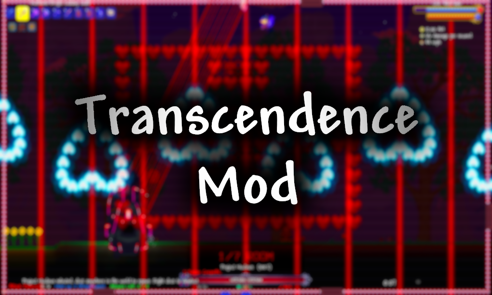

Transcendence Mod

A Terraria 1.4.4 content mod for tModloader.
GITHUB LINK
A mod that I started developing in 2022.
The 1.0 version will contain:
- Plenty of Unique Weapons and Accessories
- 4 New Bosses and 3 Mini-Bosses
- Frost Serpent, a Post-Moonlord Worm Boss fought in the Tundra.
- Atmospheron, a Post-Moonlord Boss that can bend the sky.
- Project Nucleus, a Pre-Celestial Seraph Boss. The final component of the mechanical reconstruction of Cthulhu.
- Celestial Seraph, the Highest of Angels. Tasked with monitoring the Terrarian after the defeat of Wall of Flesh.
- Headless Terror, a Post-Eye miniboss which can be spawned at night.
- Possessed Blade, a Post-Skeletron miniboss taking the appearance of the infamous Muramasa.
- Lightvessel, a Post-Moonlord miniboss found in Lower Heaven. Subordinate of the Celestial Seraph.
- Unique Mechanics
- Parrying
- Modifiers
- Contacting the Seraph
- Custom Achievement Tree inspired by various Minecraft Mods
- 3 New Vendors:
- The Blacksmith, capable of applying modifiers and upgrades to items.
- The Cosmic Archmage, capable of doing cosmic magic and selling space-related items.
- The Friendly Snowman, found in the Ice Biome. Sells snow and winter themed items. Scared of the snowman mafia.
- 3 New Biomes:
- Lower Heaven
- The Void
- The Volcanic Layer
- Several Landmarks:
- The Holy Fields. A large, open field with no hostile enemies located under Lower Heaven. Perfect for fighting some bosses.
- Cosmic Cathedral. Contains the Celestial Altar, which can take you to the Seraph's pocket dimension.
- The Friendly Snowman's camp, houses said NPC.